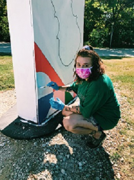

About the Artist
Lindsey Rickard, 26, is a naturally gifted artist and designer. She has made contacts in the tattoo industry across the globe, having designed for and gotten tattoos from artists in 6 countries and 3 continents

After her adventurous years abroad, Lindsey has returned home to bring her creativity and talent to the Windy City. Lindsey's design ability ranges from fun and whimsical, to the tastefully elegant, to the dramatic and macabre - there's something for everyone!